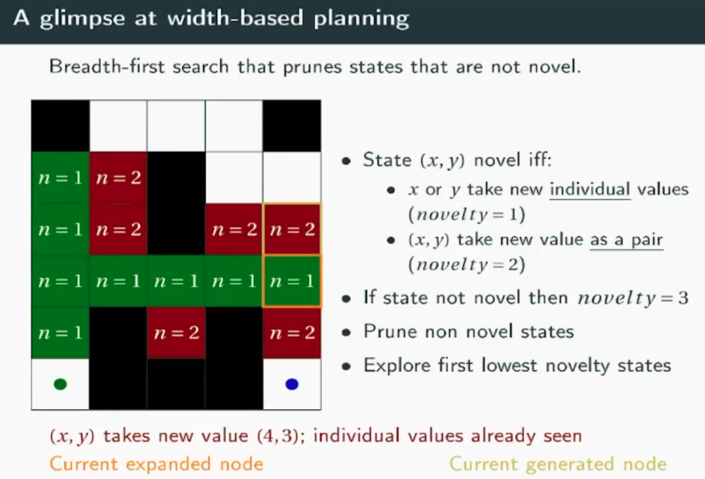
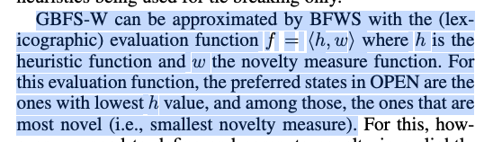
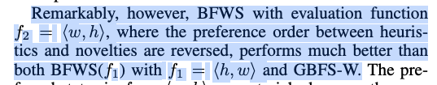
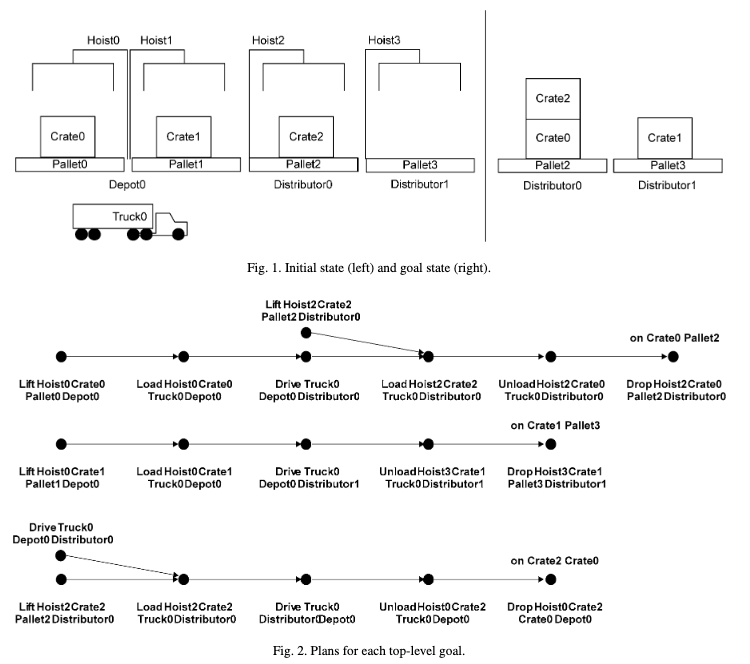
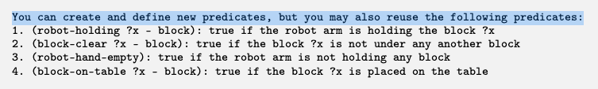
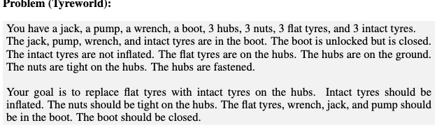
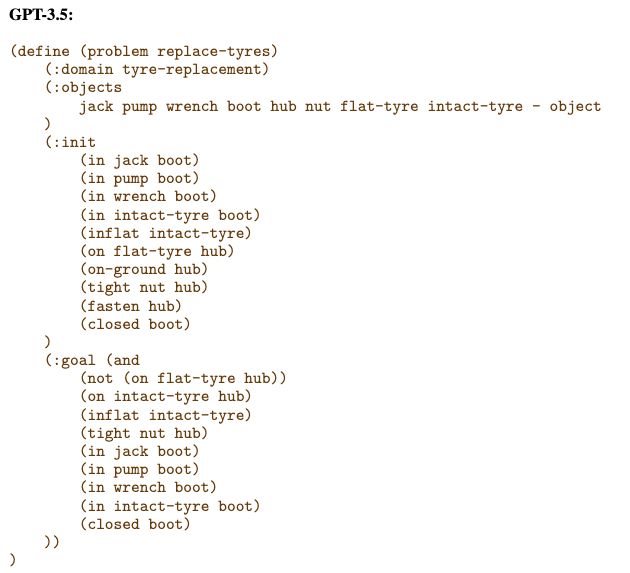

Previous Work Review#
- we focus on how LLM can assists planning (using their reasoning ability)
You need password to access to the content, go to Slack *#phdsukai to find more.
Part of this article is encrypted with password:
[TOC]
TODO List#
- search for useful task domains (Montezuma, Heavy Pack, Spider)
- read planning lecture and SIW+ planner papers
- setup GPT4 model https://github.com/xtekky/gpt4free#install (I subscribed official GPT4 plus for preliminary testing)
- think about composition of goals in a task and how to sort them in the right order using LLM
- preliminary test on heavy pack (come up with the prompt)
- preliminary test on Spider
- preliminary test on Miconic
- preliminary test on Spanner
- think about using LLM to generate PDDL file and combine with low-level RL control
- preliminary test on Montezuma (come up with the prompt)
- read paper about generating PDDL from LLM
-
preliminary test on Spider
- understand the logs from the planner
- find domains that sequence of achieving subgoal is essential
- More preliminary tests are needed to test accessible LLMs
- try ugorsahin / ChatGPT_Automation
- understand and try ChatGLM 6B
Revise of the future work#
I thought we discussed two research directions during the meeting.
-
the first direction is that we do not trust the reasoning ability of LLM, and thus we only provide LLMs with the description of the task and then ask it to generate problem description in PDDL format, and then we ask an external planner to generate a plan.
- related paper is LLM+P https://arxiv.org/abs/2304.11477
- we can extend our previous Montezuma project based on this pipeline: first we ask LLM to understand the environment (from walkthrough, from game manual, and yes no more computer vision stuffs because we are getting information from pure text!), then we ask LLM to generate domain and problem description in PDDL format. After that, we train modular RL policy that is associated with each actions described in PDDL. So essentially, we have LLM + PDDL (planner) + RL low-level control
- contribution: an efficient framework for solving embodied robotic tasks. (but I am afraid that other researchers might do the same thing as us)
-
the second direction is that we trust the reasoning ability of LLM, and we want LLM to help classical planners to recognise subgoals and order them correctly.
-
we want LLM to help us to decompose complicated goals when a task contains multiple goals. related papers are those few-shot planning with LLM paper https://arxiv.org/pdf/2212.04088.pdf, https://arxiv.org/pdf/2302.05128.pdf, https://openreview.net/pdf?id=3R3Pz5i0tye
-
The background is that goals may be interleaved with each other in a complicated way (e.g., repetition of goals, do and undo goals in order to achieve another goal). Planners are not really efficient searching for the optimal plan. Thus we want LLM to use their knowledge to help.
-
I may need help from Nir to suggest baseline planner and also task domains for this research.
-
the evaluation metric should be the computational time of the planner.. (though LLM would spend quite a huge computational time)
-
contribution: give insights about the reasoning ability of LLM; we investigate a way of utilising LLM for planning based on the goal recognition and ordering. (But I don’t know how can we differentiate our work from those who already tried to use LLM to generate plans. It seems that the task of ordering subgoals is similar to the task of generating plans)
-
Task domains#
- sussman anomalies https://www.cs.vassar.edu/~hunsberg/cs365/planning/asst5.pdf
- we can consider
- Montezuma (difficult due to large state space and sparse reward),
- Heavy Pack (difficult due to ordering of goal completion), Spider for our task environments (difficult due to ordering of goal completion)
PDDL stuffs#
- PDDL online editor http://editor.planning.domains/
- pddl planner stuffs
- The planner is running SIW+, and if it fails, it runs a complete search similar to BFWS.
- This is the codebase for the planner:https://github.com/LAPKT-dev/LAPKT-public/tree/master/planners/siw_plus-then-bfs_f-ffparser It doesn’t guarantee optimal solutions
- In the case of sussman anomalies, SIW solves one goal at a time, and once it reaches a goal, it does a quick reasoning test to check if the goal can be mantained “without undoing it” until the end
- planning lecture https://kwarc.info/teaching/AI/slides-part4.pdf
- partial order planning
- dash line is the temporal link (how to form a path)
- concrete line is the causal link
Width based planning#

-
above is called IW (Iterated Width search)
-
SIW+ paper: https://ebooks.iospress.nl/pdf/doi/10.3233/978-1-61499-419-0-1059
- improvement: 1. depth-first search that is able to backtrack. 2. computing a relaxed plan once before going to the next subgoal.
- we calculate the atoms that made true in the relaxed plan as $m$.
-
BFWS: https://ojs.aaai.org/index.php/AAAI/article/download/11027/10886


- reason: explore then exploit…
Montezuma with PDDL#
- Montezuma PDDL domain https://github.com/LogicRL/MontezumaRevenge/blob/master/PDDL/domain.pddl
- paper title: “Deep Reinforcement Learning with Abstract High-level Symbolic Planning” (this might become related work)
- another related paper that use PDDL in Montezuma https://arxiv.org/pdf/2112.09836.pdf, This framework features a loop training procedure, which enables guiding the improvement of policy by planning with action models and symbolic options learned from interactive trajectories automatically.
Preliminary test on goal sorting#
Preliminary test on heavy pack domain about subgoal ordering#
GPT4 version https://chat.openai.com/share/d18d6b13-b586-4a2b-968c-3b799c71c27f
- The strategy is wrong, and thus the decision of which subgoal to be achieved first is also wrong.
- However, the deduction of the weight ordering of objects is performed correctly by GPT4
GPT3.5 version https://chat.openai.com/share/96d74e2a-cb1d-4687-91a9-b7ea354e404b
- interestingly, the strategy is correct, and the decision of which subgoal needs to be achieved first is also correct
- However, the deduction of the weight ordering of objects is wrong.
Discovery: the reasoning ability of LLM seems not stable. I think we need to be careful about how to give prompts to the LLM. We may prefer LLMs to provide relevant key information of the problem rather than concrete strategies..
Preliminary test on spider domain about subgoal ordering#
pddl files url https://bitbucket.org/ipc2018-classical/domains/src/master/sat/spider/
GPT4 https://chat.openai.com/share/c39842e0-31d8-4067-9ab2-58d389ac22f5
- the LLM cannot give a precise suggestion about which subgoals should be achieved first due to the complexity of the env.
- it gave a general suggestion that the agent should clear piles, which is not very helpful.
Discovery: As the task environment becomes more complex, the LLM tends to give general suggestions instead of telling which subgoals should be achieving first.
Preliminary test on Miconic domain about goal ordering#
GPT4 https://chat.openai.com/share/a76ba115-1e9c-4242-966e-a46d5cb1507f
- the domain Miconic does not really care about the ordering of completing subgoals if we only want acceptable plans
GPT3.5 https://chat.openai.com/share/19b00829-43c2-4145-ab33-ca7bd251c033
- according to the conversation, we can tell that GPT3.5 is less intelligent than GPT4
- the diagram generated form GPT3.5 is wrong.
Preliminary test on Spanner domain about goal ordering#
GPT4 https://chat.openai.com/share/c10cc01d-2f82-4087-b743-d6683522e5b2
- GPT4 stated that “Given the goal to tighten all three nuts, the specific order of tightening does not matter as long as all are eventually tightened.”, which is correct
- the diagram drawn by GPT4 is correct and informative
GPT3.5 https://chat.openai.com/share/f1c007fc-a895-4ce8-b636-5173db481642
- GPT3.5 failed to realise that the ordering of achieving which subgoal does not matter
- the diagram drawn by GPT3.5 is wrong
Discovery: GPT-4 has the ability to recognise that, in certain task domains, the order in which subgoals are achieved does not matter. This is something that GPT-3.5 failed to acknowledge. GPT4 is able to draw a correct simple diagram in ascii to show the relationship of objects stated in the problem file.
Preliminary test on using LLM to generate PDDL#
MONTEZUMA REVENGE#
GPT4 https://chat.openai.com/share/3220e6b4-deed-433a-a075-bcc4beed0573
- quite reasonable output, though the output is not consistent
- require further guidance
GPT3.5 https://chat.openai.com/share/02507fd4-a409-49a4-bd6a-fd7628d3fa83
- also reasonable
- we can see there are grammar errors – not a big deal though
potential improvements for existing work#
related paper
- Leveraging Pretrained Large Language Models to Construct and Utilise World Models for Model Based Task Planning
- Generalised Planning in Pddl Domains With Pretrained Large Language Models
- LLM+P Empowering Large Language Models With Optimal Planning Proficiency
limitation of existing work
-
existing studies admitted that their performance is heavily relied on the reasoning capability of GPT4
- the issues are 1) Closed source: it is a commercial LLM, and you have no idea how it works to enhance the reasoning ability of the model, there could be some cheating there, e.g., having additional hidden reasoning module in GPT4. 2) Accessibility: it is large and cannot run locally on your personal computer. Also you need to pay for it.
-
A POTENTIAL RESEARCH QUESTION: how can we improve the current LLM+PDDL methodology so that more accessible LLMs (i.e., smaller and free) can also reach similar performance as GPT4 and GPT3.5.
-
For convenience, I will use “smaller LLM” to refer to the more accessible LLMs (e.g., GPT3.5, gptforall 7B, vicuna 7B), to use these more accessible LLMs, we can use “langchain” framework
core idea for improving the current method
- we need to ensure that the method will not rely on the reasoning ability of LLMs, but we need to rely on the summarising ability, translation ability and commonsense knowledge of LLMs
- How: don’t know yet. Maybe we need fintuning for smaller LLMs, we then give the community a training dataset for generating PDDL files from human natural languages.
- Maybe we need a more advanced prompt design, such that we can guide LLMs smoothly towards the target output.
Anchored prompts#
- incorporate anchors into prompts
- e.g., X(hypernym) such as Y(instance) and Z(anchor)
- connection phrase can be “such as”, “including”, “especially”
Planner SIW_plus-and-then-BFWS#
|
|
definition of fluent
- fluents are the state variables used to define the state space with each fluent corresponding to a predicate with some arity.
Find domains for sub-goal ordering#
based on the paper “decomposition of planning problems” by Laura Sebastia et. al.
- heavy stack problem
- problem from “decomposition of planning problems” paper

-
ahhh, not very much I can find.
-
What else can LLM do
- based on the paper “Solving Large-Scale Planning Problems by Decomposition and Macro Generation”, we can ask LLM to help us to define macro actions, so that the planner can reduce the search space.
- this is also important when the problem does not care about the subgoal ordering.
- this is something related to Hierarchical Planning
More preliminary tests are needed to test accessible LLMs#
- we know that GPT3.5 and GPT4 are good at outputting structured language format. We need to know whether other more accessible LLMs are also capable of that.
BTW, we may want to test on different prompt designs to see if we can improve the accuracy:
- in the first paper, they asked LLM to decide whether it wants to define new predicates or reuse the old predicates

- we shall partition the context and generate PDDL sections one by one, rather than “one big chuck in one out chunk out” mode


try ugorsahin / ChatGPT_Automation#
TBC
understand and try ChatGLM 6B#
TBC
Paper Reading Notes#
- Leveraging Pretrained Large Language Models to Construct and Utilise World Models for Model Based Task Planning
- Author: Lin Guan et. al.
- Publish Year: 24 May 2023
- Review Date: Sun, Jun 4, 2023